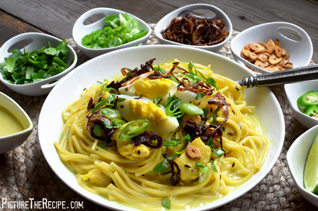

Koser: An Burmese Speciality

Description
If something can be called a bowl of happiness, this could well be it.
Burmese Khow Suey is a delicious noodle dish made with egg noodles,
curried chicken and coconut milk. Served with a variety of condiments,
each spoon full of soup you eat will be bursting with flavours!
Khow Suey is probably the first thing that comes to mind when you think about Burmese cuisine.
Ingredients
- 500 grams chicken cut to bite-size pieces
- 300 grams egg noodles
- 1/2 cup shallots thinly sliced
- 1/4 cup garlic thinly sliced
- 3 small red chilies Optional. You can use all green chillies.
- 2 green chilies slit lengthwise
- 1 inch ginger grated
- 500 ml coconut milk
- 1/2 teaspoon turmeric powder
- 1 tablespoon gram flour (chickpea flour/besan)
- 2 sprigs cilantro (coriander leaves)
- 2 sprigs curry leaves
- 1 spring onions (preferably scallions/green onions)
- 1 lime wedges
- salt to taste
- 4 boiled eggs peeled and sliced into halves
Steps
- Heat some oil in a pan. When the oil is hot enough, reduce the flame and fry HALF of the thinly sliced garlic.
- As soon as they start turning brown, scoop them out on to a paper towel to soak up the oil.
- Now fry HALF of the thinly sliced shallots. Keep them along with the fried garlic. Leave the oil in the pan.
- Add chicken pieces to the pan and start frying them. Add more oil if you have to.
- Once the chicken starts turning brown, add the curry leaves, grated ginger, and the remaining chopped garlic and sliced shallots.
- Fry this for 5 minutes while stirring occasionally.
- Add the chickpea flour, turmeric powder, and salt.
- Thinly slice the chillies. I added two green chillies and one red chilli to this mix. Cook for another 5 minutes.
- Cook the egg noodles following the instructions on the package.
- Drain the noodles, and wash them in cold water. Leave it on a colander to drain the water. (Tip: Don't leave the noodles out for long. They'll go dry and stick to each other)
- Your curried chicken should be cooked by now with a nice aroma filling up the kitchen.
- Add the coconut milk, stir well, and bring to a simmer.
- Cook in medium heat. If the temperature goes high, the coconut milk will curdle.
- Add salt if required. Switch off.
- Serve hot - place some noodles and a sliced egg in a bowl, with some finely chopped cilantro, and pour the curried chicken over it.
- Provide all other accompaniments in small bowls - fried garlic, fried shallots, cilantro, chillies and lime wedges. MUST DO: For the perfect taste, squeeze some lime into your noodle soup just before eating.